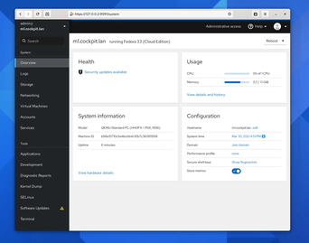
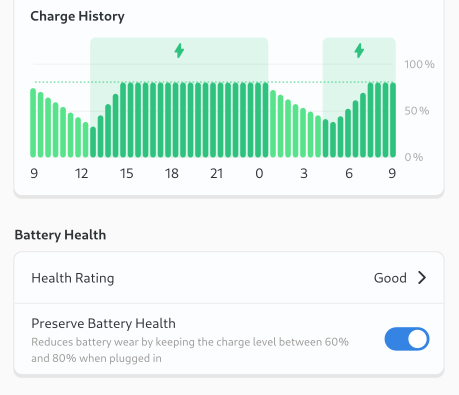
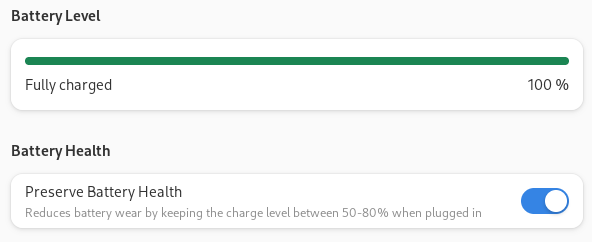

count: false <!-- * Note use P and C for presentation mode and to duplicate the window and T to reset the timer * https://docs.jonasundderwolf.de/tech-guides/remarkjs/working-with-remarkjs/ */ --> # GNOME Battery charge limits ### From Kernel API to GNOME integration --- # $ whoami * Arch Linux Developer * Red Hat Software Engineer * Day job Cockpit development (JavaScript / Python / C) * Contributed three small kernel drivers (iio/input/hid) <div align="center">  </div> ??? * Day job I go all the way down the stack from UI => Technical details * In Cockpit we interact with 100 or more API's --- # Problem * Daily use a laptop for development * By default a battery keeps trickle charging when using in docked mode * Battery degrades over time ??? --- # Solution * Set a battery charge threshold * Implemented in firmware * Might be controlled by an EC --- # Solution * Set a charge threshold at 80% <div style="margin-left: 40px"> </div> --- # Solution * Start charging under 60% * Stop charging at 80% <div style="margin-left: 40px"> </div> ??? --- # Solution * Thinkpads have two knobs for charge control * Limits usually don't survive a power cycle ```bash echo 60 > /sys/class/power_supply/BAT0/charge_start_threshold echo 80 > /sys/class/power_supply/BAT0/charge_stop_threshold ``` ??? * Add systemd unit on boot * Done? --- # Existing software * TLP - cli battery saving utility * Powerdevil (KDE) - allows setting arbitrary limits * Other DE's - nothing so far * Windows - several vendor specific tools exist ??? * solutions available, but not for anything I use --- # GNOME * Design issue existed for a few years * Users want it * GNOME wants it for TCO (Total Cost of Ownership) ??? * GNOME wants it for, for example Thinkpad's hardware certification to sell Linux laptops (afaik) * Users want it * So how should it look like? --- # GNOME Settings * User configurable thresholds? * Vendors? * Profiles? - Travel - 0-100% - Balanced - 70-80% - Best for battery - 50-60% --- # GNOME Settings * Simple switch to enable charge limits * Multiple profiles confuse users <div align="center">  </div> --- # UPower * GNOME uses UPower to make devices available on DBus * Exports devices from sysfs * Used to display battery information for mice/laptop/$bluetooth * Keyboard backlight ??? * Cool what API should it expose? --- # UPower API * Expose charge start/end threshold * Expose battery limit enabled/support * Method to enable/disable charge limiting * Configurable via hwdb * Set CHARGE_LIMIT property on UDEV battery object * Default 60-80% - Allow overriding via hwdb on DMI/battery name for vendors/users ??? * No configuration file --- # Kernel support * Usually implemented in drivers/platform/x86 (wmi/acpi/ec) ```C DEVICE_ATTR_RW(charge_control_end_threshold) static ssize_t charge_control_end_threshold_store(struct device *device, struct device_attribute *attr, const char *buf, count) static ssize_t charge_control_end_threshold_show(struct device *device, struct device_attribute *attr, char *buf) ``` --- # Device support * Supports start/end threshold - System76, MSI, Huawei, Lenovo (Thinkpad) * Only supports end threshold - Toshiba, Asus, LG --- # Device support - LG * Supports 80% or 100% ```c if (value == 100 || value == 80) { union acpi_object *r; ``` --- # Device support - Toshiba * Accepts 0-100 as set values * Reports either 80% or 100% ```c charge_control_end_threshold_store() if (value < 1 || value > 100) return -EINVAL; rval = toshiba_battery_charge_mode_set(toshiba_acpi, (value < 90) ? 1 : 0); ``` ```c charge_control_end_threshold_show() if (state == 1) return sprintf(buf, "80\n"); else return sprintf(buf, "100\n"); ``` --- # Device support - Asus * Supports setting 0-100% * No support to read out configured state in driver * According to users, sets a hidden start threshold of end - 2 --- # Device support - conclusion * Different behaviour per device * No supported values exported in sysfs * All reverse engineered --- # Implementation * Only supports start/stop thresholds for now * Writes configured state per battery to it's state dir ??? Some users fully charge and then set a stop threshold --- # Status * UPower merge request under review * GNOME settings merge request under review <div align="center">  </div> --- # Future work - Kernel API * Expose supported charge thresholds in sysfs? * Can't break sysfs API ```bash $ cat /sys/class/power_supply/BAT0/charge_behaviour [auto] inhibit-charge force-discharge ``` ```bash $ cat /sys/class/power_supply/BAT0/charge_control_stop_threshold_supported 60 80 ``` ??? Something to think about, currently it's undocumented so I should probably send some documentation patches. Documentation/admin-guide/laptops/lg-laptop.rst --- # Future device support * Steam deck - not yet mainlined charge_control_end_threshold * Dell? - supports charge thresholds on some Latitudes in BIOS - BIOS settings in /sys/class/firmware-attributes/* - No charge\_control\_\*_threshold support * Microsoft Surface - BIOS setting, likely not accessible ??? * Should the kernel then also expose charge_control attributes and write BIOS settings? --- # Future work - Framework * Support charge_control_stop_threshold * User utility exists to talk to the EC controller * Needs a kernel diver to do that * Ideal scenario, add firmware support to set charge_control_start_threshold --- # Battery calibration support * Thinkpad's support setting the charge_behaviour in sysfs * Framework can likely support this * Calibration - Disable charge thresholds - Force discharge on AC power - Fully charge again - Re-calibrates battery attributes (energy_full) ??? * disable charge limits * force-discharge on AC power * charge fully * should reset energy_full attribute --- # Thanks * Allan Day (GNOME design) * Carlos (Glib/ GNOME settings) * Hans de Goede (UPower / Kernel) * Martin Pitt (DBus API help) * Mark Pearson (Lenovo) --- # Questions #